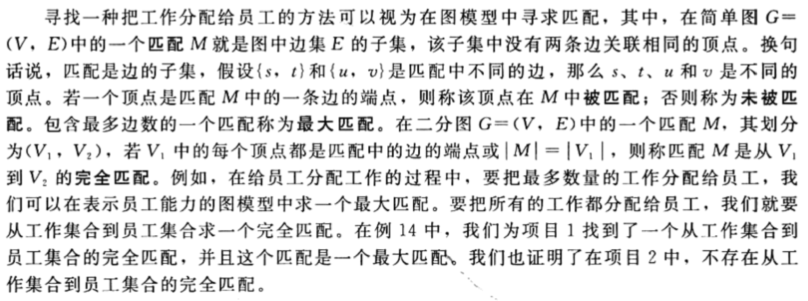
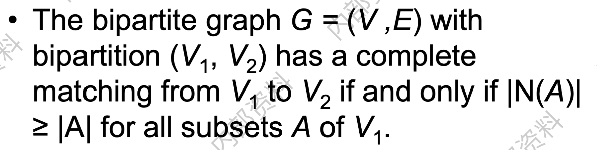

匹配/对集问题
定义

翻译成人话就是，匹配要求边集中任何两条边不相邻，最大匹配要求边数最多，完全匹配要求所有顶点都包含。
霍尔婚姻定理 HALL’S MARRIAGE THEOREM

稳定匹配问题
问题描述：给出一个\(n\)个男性的集合\(M\)和\(n\)个女性的集合\(W\)，找到一个“稳定”匹配。
每位男性根据对女性的心仪程度从高至低进行排名； 每位女性根据对男性的心仪程度从高至低进行排名；
不稳定对：给出一个完美匹配\(S\)，男性\(m\)和女性\(w\)是不稳定的，如果同时满足下列条件：
\(m\)相比起当前配偶，更喜欢\(w\)； \(w\)相比起当前配偶，更喜欢\(m\)；
稳定匹配：一个不包含不稳定对的完美匹配。
Gale-Shapley 算法（延迟决定法）

#include<iostream>
using namespace std;
const int N = 10005;
int M[N] = {0}, W[N] = {0}; // 第0个元素表示已经配对的男性/女性个数；男性和女性集合，0表示目前还单身，>0表示已经和该数字对应的异性配对
int M_pri[N][N] = {0}, W_pri[N][N] = {0}; // 第0个元素记录的是男生 m 在寻找心仪女生时的进度；男性和女性对异性的心仪程度排名
void getPri(int n);
void G_S(int num);
void output(int num);
bool lovemore(int m,int w,int num);
// 获取心仪程度输入
void getPri(int n) {
for (int i = 1; i <= n; i++) {
for (int j = 1; j <= n; j++) {
cin >> M_pri[i][j]; // 表示第i位男性对女性心仪程度排名，M_pri[i][j]位女生排名第j名；
}
}
for (int i = 1; i <= n; i++) {
for (int j = 1; j <= n; j++) {
cin >> W_pri[i][j]; // 表示第i位女性对男性心仪程度排名，W_pri[i][j]位男生排名第j名；
}
}
}
// Gale-Shapley 算法
void G_S(int num) {
int m, w;
while (M[0] != num) // 男生们还未完成配对
{
w = m = 0;
while (M[++m] != 0) ; // 找到第一个出现的还没有配对的男生m
w = M_pri[m][++M_pri[m][0]]; // 找到第m位男生心中剩下排名第一的女生w
if (W[w]) //如果女生已经在约会了
{
if (lovemore(m,w,num)) // 如果w更爱m
{
M[W[w]] = 0; // w 甩了当前和她配对的
M[m] = w;
W[w] = m;
}
else
continue;
}
else // 如果女生没有约会还是自由状态，成功配对
{
M[m]=w;
M[0]++;
W[w]=m;
W[0]++;
}
}
}
// 判断w是不是更爱m
bool lovemore(int m,int w,int num) {
for (int i = 0; i < num; i++) { // 按排名从高到低往下找
if (W_pri[w][i] == W[w]) { // 先找到和w配对的那个
return false;
}
if (W_pri[w][i] == m) { // 先找到m，说明更爱m
return true;
}
}
}
void output(int num) {
for (int i = 1;i <= num; i++)
cout<<"("<<i<<", "<<M[i]<<")"<<endl;
}
void solve() {
int n;
cin>>n;
getPri(n);
G_S(n);
output(n);
}
int main() {
solve();
return 0;
}